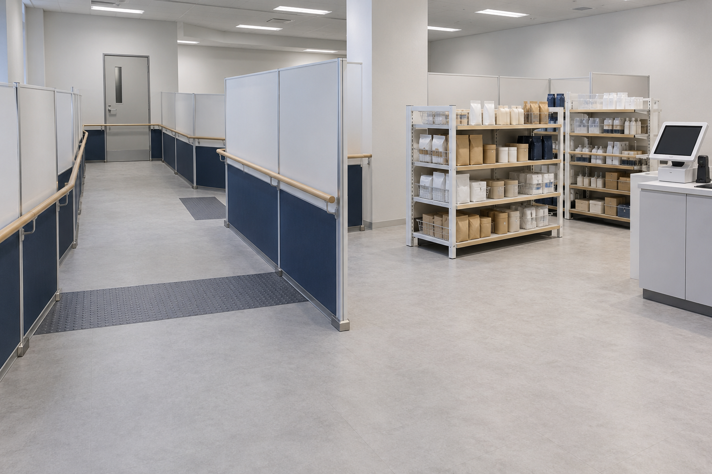

歩行と経路の切り替え
通路を歩く、角で曲がる、表示を見て立ち止まるといった動作を確認します。可動式の壁や手すりを用いて通路幅や見通しを変え、周辺環境の認識と案内の分かりやすさを評価します。
LIVING ENVIRONMENT TEST AREA
日常の場面を、確かめられる環境へ。
移動・買い物・機器操作を屋内で再現し、支援の使いやすさを検証します。
OVERVIEW
生活環境実証エリアは、TIME BACK事業センター内部に設けた検証施設です。通路や売場、受付などを模した設備を組み替え、Behavior Assistance Systemによる移動支援や、製品・サービスの操作性を確認しています。
明るさや通路幅、案内表示などの条件をそろえたうえで比較できることが、屋内施設の特徴です。実際の街路とは切り分けた環境で、利用場面に応じた支援と表示の改善に取り組んでいます。

TEST SCENES
日常の動作を一つずつ確かめ、環境の違いが使いやすさにどう影響するかを整理します。
通路を歩く、角で曲がる、表示を見て立ち止まるといった動作を確認します。可動式の壁や手すりを用いて通路幅や見通しを変え、周辺環境の認識と案内の分かりやすさを評価します。
模擬売場で、商品を探す、棚の表示を確認する、会計端末へ進むといった場面を再現します。棚の配置や表示位置を変え、商品の見つけやすさや移動のしやすさを確かめます。
受付カウンターやタッチパネル端末を使い、案内に沿って操作できるかを確認します。画面の文字の大きさ、ボタンの位置、確認メッセージなどを比較し、迷いや操作の負担を減らします。
FACILITIES & EQUIPMENT
対象となる生活場面に合わせて設備を配置し、同じ条件で繰り返し確認できる環境を整えています。
OPERATION
検証は案件ごとに計画し、参加者へ内容、使用機器、取得する情報を説明したうえで実施します。開始前には体調と機器の装着状態を確認し、検証中もスタッフが状況を見守ります。
参加者から申し出があった場合や、体調・設備に問題が見られた場合は、確認を優先して検証を中断します。取得する記録は検証目的に必要な範囲に限定し、評価結果を支援条件や製品・サービスの改善に役立てます。